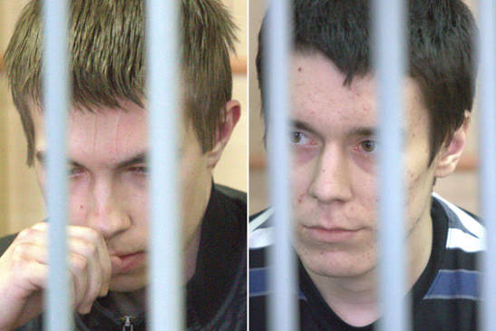

От ареста (апрель 2011) до окончательного приговора (октябрь 2013) прошло около двух с половиной лет. Сам процесс в областном суде шёл около семи месяцев. Инстанций две: Иркутский областной суд и апелляция в Верховном суде РФ.
От ареста (апрель 2011) до окончательного приговора (октябрь 2013) прошло около двух с половиной лет. Сам процесс в областном суде шёл около семи месяцев. Инстанций две: Иркутский областной суд и апелляция в Верховном суде РФ.
| Дата | Событие |
|---|---|
| 7 апр 2011 | Арест на два месяца, затем срок продлевали |
| 12 авг 2012 | Дело передано в областной суд |
| 5–10 сен 2012 | Начало процесса, зачитан обвинительный акт; Ануфриев признал только убийства Пирог и Куйдиной, Лыткин не признал только экстремизм |
| 16 окт 2012 | Ануфриев в зале суда нанёс себе порезы |
| 6–13 мар 2013 | Лыткин назвал возможных соучастников, затем отказался |
| 18 мар 2013 | Последнее слово Ануфриева; Лыткин от слова отказался |
| 2 апр 2013 | Приговор (около 150 страниц, читали 8 часов) |
| 3 окт 2013 | Верховный суд: приговор Ануфриеву остаётся, Лыткину срок снижен с 24 до 20 лет |
Ануфриев. Сначала держался цинично, потом дважды плакал в зале, пытался переложить вину на Лыткина и отказался от части признаний. В последнем слове: «Я сам не понимаю, что на меня нашло». После приговора крикнул родным погибших: «Ну что, довольны?». Мать Данила Семёнова ответила, что он радовался, когда убивали двенадцатилетнего ребёнка. Он подавал жалобы на давление при задержании; проверка нарушений не нашла.
Лыткин. Держался отстранённо, давал короткие ответы. Не использовал право на последнее слово. Слушал приговор, не опуская глаз.
Потерпевшие. Некоторые отказывались свидетельствовать, во время заседаний свидетели теряли сознание. Мать Данила Семёнова считала, что Лыткину нужно пожизненное, подала апелляцию и написала письмо Путину. Нина Кузьмина сочла приговор справедливым.
Ануфриев. С 27 января 2014 года в колонии «Огненный остров» (Вологодская область). В 2014 году дал интервью «Комсомольской правде», вины не признал.
Лыткин. Сначала колония в Иркутской области, затем Якутия, с 2015 года ИК-41 в Кемерове. В 2016 году суд счёл нужным перевести его на принудительное лечение, но до этого Лыткин напал на сокамерника; по документам, он хотел получить пожизненный срок и попасть в одну колонию с Ануфриевым. Лечение отменили; 1 июня 2017 года его приговорили ещё к 11 годам. С 2018 года он в ИК-7 в Ангарске.
Лыткин умер в ИК-7 в Ангарске в конце 2021 года, прожив 28 лет и отбыв около десяти лет срока. По официальным сообщениям, его нашли в камере с самонанесёнными повреждениями, после помощи он скончался. Источники расходятся в датах (от 30 ноября до 3 декабря). Бывший следователь Николай Катаев связывал случившееся с депрессией и унижениями со стороны других заключённых. По прежнему сроку он мог выйти в 2031 году.
Если тема суицида для вас тяжела, обратитесь к близким или специалисту.

зал суда / новостной кадр